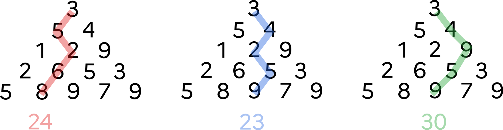
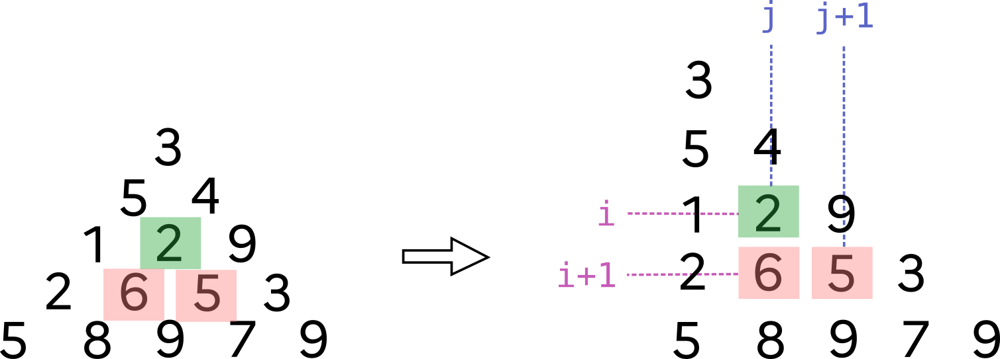
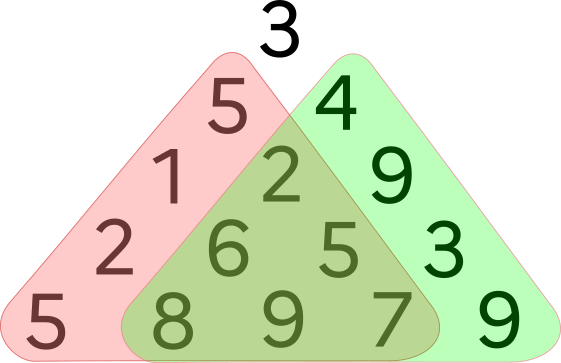
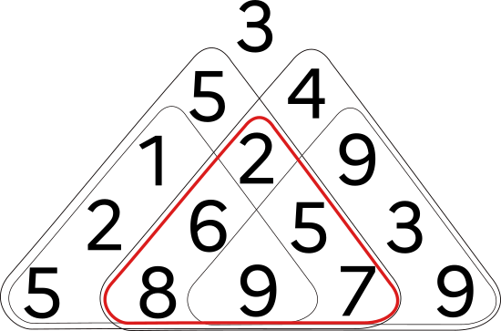
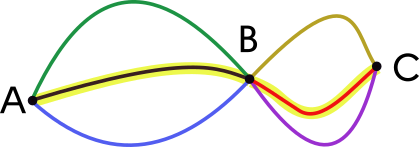
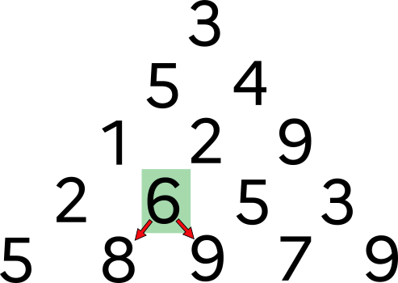
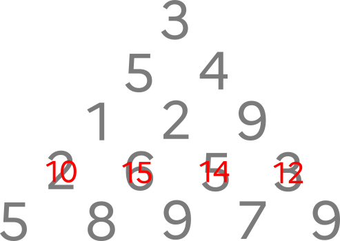
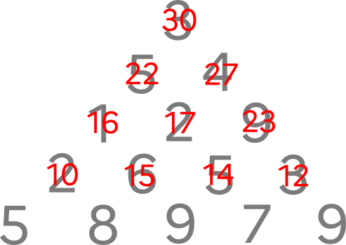

Optimisation d'une somme dans une pyramide¶
Problème
Considérons la pyramide ci-dessous :
En partant du sommet et en descendant jusqu'en bas en prenant soit à gauche soit à droite, quelle est la somme maximale que l'on peut obtenir ?

1. Quelques outils¶
 La pyramide ci-dessus sera implémentée par une liste de listes :
La pyramide ci-dessus sera implémentée par une liste de listes :
1 | |
Pour générer une pyramide de hauteur n (composée d'entiers aléatoires entre 0 et 9) :
1 2 3 4 5 6 7 8 | |
Pour afficher une pyramide en console :
1 2 3 | |
Example
Créer puis afficher une pyramide de hauteur 10.
!!! success \"Correction"
1 2 3 4 5 6 7 8 9 10 11 12 | |
2. Recherche par force brute¶
2.1 Liste de tous les parcours¶
La fonction liste_parcours ci-dessous renvoie la liste de tous les trajets possibles lors de la traversée de la pyramide pyr. Ces parcours contiennent les indices des valeurs traversées lors du parcours.
1 2 3 4 5 6 7 8 9 10 11 12 13 14 15 16 17 18 19 20 | |
Example
- Observez la liste des trajets pour la pyramide
pyr_exemplepour en comprendre la notation. - Pour une pyramide de hauteur $n$, combien y a-t-il de trajets différents ?
- Pour une pyramide de hauteur 41, que pensez-vous du nombre de trajets différents ?
!!! success \"Correction" Le nombre de trajets pour une hauteur $n$ est $2^{n-1}$.
1 | |
2.2 Valeur d'un trajet¶
Example
Écrire une fonction val_trajet qui prend en paramètres un trajet trajet et une pyramide pyr et qui renvoie la somme finale à l'issue de ce trajet.
Exemple :
1 2 | |
!!! success \"Correction"
1 2 3 4 5 | |
2.3 Somme maximale par force brute¶
Example
Q1. Écrire une fonction max_force_brute qui prend en paramètre une pyramide pyr et qui renvoie la somme maximale parmi tous les trajets possibles.
!!! success \"Correction"
1 2 3 4 5 6 7 8 | |
Q2. Testez votre algorithme avec pyr_exemple, ainsi qu'avec des pyramides de taille supérieure. Que se passe-t-il ?
!!! success \"Correction"
Notre algorithme donne bien la bonne solution pour pyr_exemple, mais dès que la taille de la pyramide augmente, le temps d'exécution devient beaucoup trop long et notre programme inutilisable.
3. Recherche par méthode gloutonne¶
Notre algorithme de force brute n'étant pas utilisable, il va falloir essayer d'être plus efficace. Pourquoi ne pas chercher une méthode gloutonne ?
Rappel : lors du parcours d'une pyramide, les deux cases sous la case [i][j] sont la case [i+1][j] et [i+1][j+1].

Example
Q1. Compléter la fonction max_glouton ci-dessous qui calcule de manière gloutonne le «meilleur» trajet d'une pyramide pyr.
1 2 3 4 5 6 7 8 9 10 11 12 | |
!!! success \"Correction"
1 2 3 4 5 6 7 8 9 10 11 12 | |
Q2. Observer et analyser le résultat donné par notre algorithme sur pyr_exemple.
!!! success \"Correction" Notre algorithme renvoie 25 au lieu de 30. Il ne nous donne donc pas le meilleur résultat.
1 | |
4. Recherche par méthode récursive¶
Example
Observer le dessin suivant :

Q1. En déduire une fonction max_recursif qui prendra en paramètre une pyramide pyr et qui calculera de manière récursive la somme maximale.
Pour extraire les deux sous-pyramides gauche et droite, on pourra utiliser le code suivant :
1 2 3 4 5 6 7 8 9 | |
1 2 3 4 5 | |
!!! success \"Correction"
1 2 3 4 5 | |
Q2. Testez votre algorithme avec pyr_exemple, ainsi qu'avec des pyramides de taille supérieure. Que se passe-t-il ?
!!! success \"Correction" Dès que la hauteur de la pyramide dépasse 25 (environ) le programme devient extrêmement lent et inutilisable. On retrouve le problème rencontré avec l'algorithme de force brute.
5. Optimisation de la méthode récursive par programmation dynamique¶
La lenteur de l'algorithme précédent vient du fait que certains calculs sont redondants.

Par exemple, le calcul du maximum de la pyramide rouge sera lancé en tant que sous-pyramide droite de la valeur 5, et en tant que sous-pyramide gauche de la valeur 4.
Si la pyramide initiale est grande, ces appels inutiles vont se multiplier et ralentir considérablement l'exécution du programme.
Example
Dans le code récursif suivant, chaque pyramide est identifiée par les coordonnées de son sommet, stockées dans le tuple pos .
On va utiliser un dictionnaire dict_max qui associera à chaque sommet (i, j) la somme maximale de sa pyramide.
Pour chaque sommet de coordonnées (i, j) :
- si on est tout en bas de la pyramide, on renvoie la valeur du sommet de cette pyramide (réduite à une valeur).
- sinon :
- on interroge notre dictionnaire de stockage
dict_max: est-ce qu'il contient parmi ses clés notre tuple(i, j)? Si oui, on renvoie juste la valeur associée. - sinon, on calcule cette valeur par deux appels récursifs (sur les deux sous-pyramides), et on la stocke dans
dict_max, associée au tuple(i, j), avant de la renvoyer.
- on interroge notre dictionnaire de stockage
Q1. Compléter le code suivant :
1 2 3 4 5 6 7 8 9 10 11 | |
!!! success \"Correction"
1 2 3 4 5 6 7 8 9 10 11 | |
Q2. Testez votre algorithme avec pyr_exemple, ainsi qu'avec des pyramides de taille supérieure. Que constatez-vous ?
!!! success \"Correction" On constate que notre algorithme est devenu quasi-instantané. Il ne faut que quelques secondes pour trouver le maximum d'une pyramide de taille 500.
6. Méthode bottom-up¶
Plus court chemin

Dans la figure ci-dessus, le chemin surligné est le chemin de longueur minimale entre A et C.
Ce chemin passe par B.
On peut donc en déduire que la portion de ce chemin entre B et C (portion rouge) est le chemin minimal entre B et C.
On peut le démontrer facilement par l'absurde : si le chemin rouge n'est pas le chemin minimal entre B et C, alors il en existe un autre qui est minimal (par exemple le violet). En emprutant ce chemin à partir de B, on pourrait donc construire entre A et C un chemin plus court que le chemin surligné, ce qui est impossible.
De manière analogue, on peut affirmer ceci : si le chemin minimal passe par B, alors la portion de ce chemin minimal entre B et C est forcément le chemin rouge.
Nous allons exploiter une idée similaire pour maximiser le parcours dans notre pyramide.

Admettons que le parcours maximal passe par la valeur 6. Ensuite, ce parcours doit passer par 8 ou par 9. Comme ce parcours est maximal, il passera forcément par 9.
On peut donc en déduire que si le parcours arrive à cette valeur 6, alors cette valeur pourrait être remplacée par 15.
Faisons de même pour les autres valeurs de l'avant-dernière ligne :

En procédant de même pour les lignes supérieures, on trouve la valeur maximale de 30 :

Example
En s'inspirant de la méthode précédente, écrire une fonction max_iteratif qui prend une pyramide pyr en paramètre et qui renvoie la somme maximale des parcours de cette pyramide.
Effectuer des tests pour apprécier l'efficacité de cette fonction.
1 2 3 4 5 | |
!!! success \"Correction"
1 2 3 4 5 | |